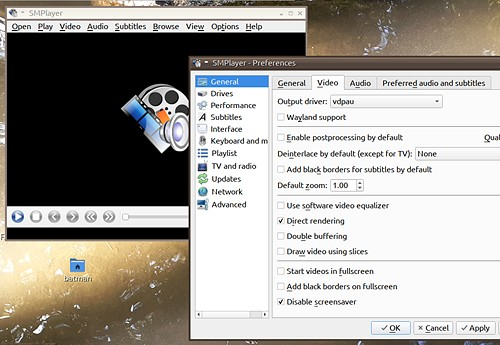
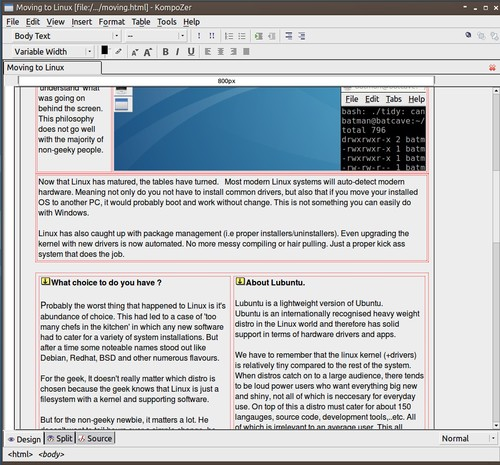
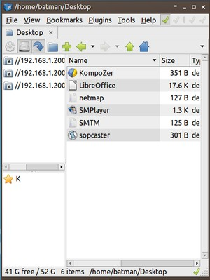
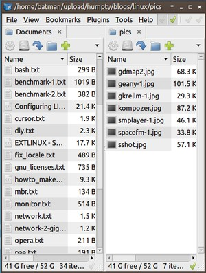

| Cool Apps you could add (Feb 2013) |
SMplayer GKrellM Geany SciTE GdMap Kompozer SpaceFM |
- media player - system monitor - program editor IDE - text editor - web page editor - file manager |
| SMplayer Media player. A gui for mplayer (or mplayer2) or mpv. Probably the best player I've used that covers a wide range of formats and devices, especially for .mkv files having multiple languages. mplayer is already renowned for it's support in linux systems. Access to it's flexibility however is a bit of a let down. SMplayer provides an easy front-end to it's features. E.g if you graphic card supports 'vdpau' you can easily set this with SMplayer to reduce your cpu usage. Alternatively you can internally switch to mpv instead of mplayer. All the usual functions like aspect ratio, video and audio equalisers, filters, AV sync, post-processing..etc is made available. Shortcut Keys are configurable and a distinguishing feature is 'position memory' of the video file so that you can continue playback from where you left off last time, and it even remembers all the settings you made for that video like audio/subtitle delays, brightness, contrast ..etc. |
 credits:Ricardo Villalba (SMplayer). mplayer-projects (Mplayer) ( And while we're here, take a look at.. MenJob A GUI front end for mplayer's brother, mencoder. ) |
| Kompozer A WYSIWYG webpage editor. (formerly called NVU). Easy web page editing without having to to write any html at all. What you see is really what you get. Kompozer stopped development before the world moved to 64 bits. However, you can still run the old version by installing it's snap version via snapcraft. If you don't like snap, Komposer was originally a split from the Seamonkey project. Seamonkey is a suite including a browser, email client and web-editor very similar to Komposer called 'Composer'. It is still actively developed and can be downloaded here. |
 |
| SpaceFM The supplied PCmanFM(-qt) file manager with Lubuntu is good Combined with GVFS it's even better. But for best productivity SpaceFM is king. It takes up less desktop space and it mounts drives without GVFS (which is slow). SpaceFM was an old fork before PCmanFM was re-written and was developed independently with a lot of useful changes including movable columns, multi-pane, task-queueing and descriptive feedback. It even remembers your last used directory. Like PCmanFM(-qt), you can also use it as a desktop manager and since SpaceFM was upgraded to v1.0, the desktop manager works really well. credits: IgnorantGuru (SpaceFM) and Hon Jen Yee (PCmanFM) The recommended version is 1.0.6 gtk2. All subsequent versions (at time of writing) suffer from pane re-sizing if a directory name is too long. This can push another panel out of view. 1.0.6 is available in the debian repositories main & common. |
 (drives and book marks)  (multi-panes - up to 4 max) |